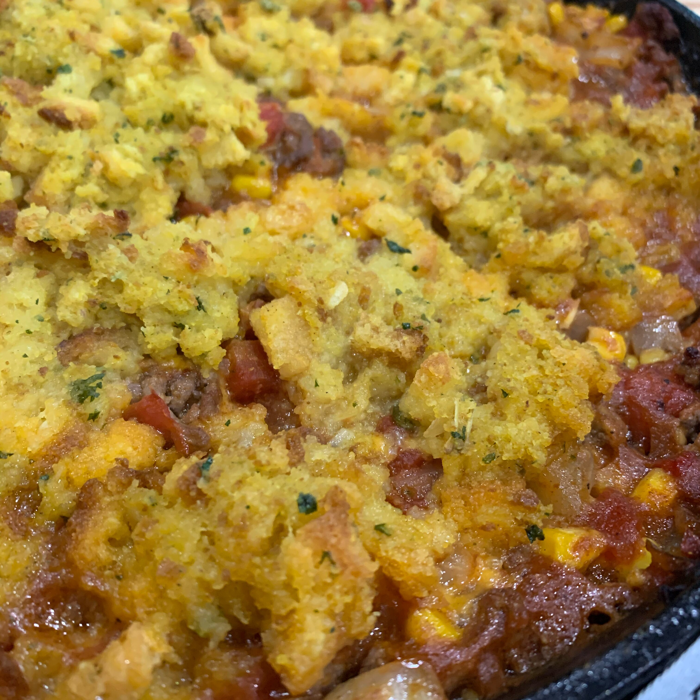

Brenda's Lasagna

Sick Casseroule
Damn he really went and made a whole casseroule
And even a second paragraph????
- 1 pound ground beef
- 1 small onion, finely chopped
- 1 ½ cups water/li>
- 1 (6 ounce) package cornbread stuffing mix (such as Kraft® Stove Top®)
- 1 (14.5 ounce) can diced tomatoes with jalapeno
- 1 (10 ounce) can diced tomatoes with green chile peppers
- 1 tablespoon chili powder
- 1 teaspoon ground cumin
- ½ teaspoon hot pepper sauce (such as Tabasco®), or more to taste
- 1 (8.75 ounce) can sweet corn, drained
- 1 cup shredded Cheddar cheese
- Preheat the oven to 375 degrees F (190 degrees C).
- Heat a large skillet over medium-high heat. Cook and stir ground beef and onion in the hot skillet until beef is browned and crumbly, 5 to 7 minutes. Drain and discard grease.
- While the beef is cooking, make stuffing. Bring water and butter to a boil in a medium saucepan. Stir in stuffing mix; cover. Remove from heat. Let stand for 5 minutes. Fluff with a fork.
- Stir diced tomatoes, chili powder, cumin, and hot sauce into the beef mixture. Simmer for 2 minutes. Add corn and Cheddar cheese. Simmer until cheese is melted completely, about 1 minute. Transfer mixture to a casserole dish. Spread cornbread stuffing evenly over the top.
- Bake in the preheated oven until browned, 20 to 30 minutes.